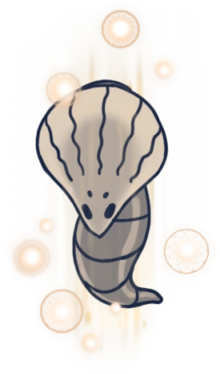

GORB
 Boss In Action Browse More Bosses
Browse More Bosses
Gorb can be found atop a hill in the Howling Cliffs, very close to the Stag Nest.
Gorb was a mystic creature with an enlarged brain, titled “Gorb, The Great Mind” by his followers, and claimed to be All-Knowing. He goaded other bugs into following him, revering his mind, and convince them to “ascend” to a higher plane of existence. His body as well as the bodies of his followers were places atop a hill in the Howling Peaks, with a tombstone depicting Gorb's image.
Health:
200/320/416/500/570
Scaling with Nail Upgrades 0/1/2/3/4 respectively.
Moves: